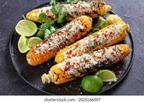

Mexican Corn

Above is a picture of our final dish (well, assuming all goes right and you add your own little twist!). Prepare your taste buds, this one is fun!
For this recipe, you will need (in no particular order):
- Corn (duh!)
- Garlic
- Mexican crema
- Mayo
- Lime juice
- Cojita cheese
- Cilantro - make sure it's fresh ;)
- Smoked paprika or chili powder
Now, we need to take all of these ingredients and actually put them together. With a little bit of patience, preparation and love, you'll end up with an amazing dish of Mexican corn! Expect this to take roughly 15 or so minutes. Follow the steps below:
- Add garlic, crema, and mayo into bowl and stir. Set this aside, and feel free to use however much of either ingredient that you would like according to your preference.
- Grill corn over medium heat - again, your preference determines everything!
- Brush the mixture in step 1 over the corn, and sprinkle some of your cheese on top.
- Add some of that fresh lime juice, and then follow up by adding some of the paprika or chili powder on top.
- Sprinkle some cilantro and enjoy!